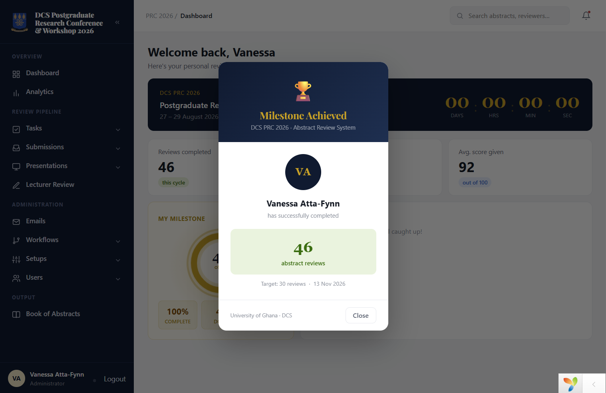
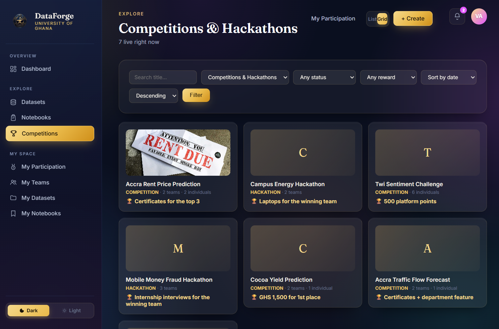
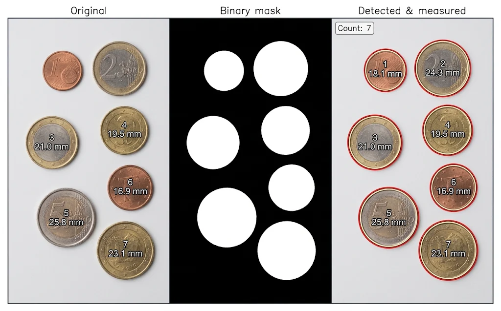

Selected & full body of work.
From a national regulator's compliance platform to a from-scratch research platform built for my university — the systems I've designed, built, and shipped, plus the ML work alongside it.
NPRA Risk-Based Supervision System
The platform Ghana's National Pensions Regulatory Authority uses to supervise the pensions industry.
- Submit regulatory returnsCorporate trustees, pension fund managers and custodians file their periodic returns online.
- Apply and get approvalsApplications move through a staged review with the regulator, from submission to decision.
- Risk-based supervisionNPRA reviews submissions, tracks compliance and assesses risk across the industry.
- One channel to the industryThe regulator surveys and communicates with regulated entities from one place.
- Guided from screen to screenBuilt-in help and walkthroughs show users what to do on every page.
- My roleI maintain and extend the system in production, onsite at NPRA.
Pensions Digital Ecosystem
NPRA's digital platform for pension scheme administration — with a mobile app for contributors.
- Pensions in your pocketContributors will follow their pension information from their phones. I'm building the mobile app.
- Scheme administrationCorporate trustees manage their pension schemes in one platform.
- Returns made simpleTrustees generate, preview and download their regulatory returns straight from scheme data.
- Built for national scaleDesigned to work with millions of member records.
UGAbstracts
A configurable review-management platform for conferences and research events.

- Fully customizable workflowsSet up your own review stages, tasks and hand-offs — without code changes.
- Role-based accessAdmins, chairs, reviewers and authors each see only what they need.
- Rubric-based scoringCriteria you define, applied consistently across every reviewer.
- Automatic conflict-of-interest detectionReviewers never receive papers they shouldn't judge.
- Automatic reviewer assignmentSubmissions are routed to the right reviewers.
- Proven in productionRan a full university research conference end to end.
DataForge

A competitions and research platform built for my university.
Hackathons, challenges and datasets at my university were scattered across WhatsApp groups and department flyers. Students missed them, and organisers had no single place to run them.
DataForge brings it all into one verified place where students discover, join and compete — and lecturers keep it trustworthy.
- Competitions & hackathonsCreators set submission limits, team sizes and who can enter. Each is approved before it goes live.
- TeamsInvite and accept to form a team, join several competitions, and teams close automatically when empty.
- DatasetsPublish datasets and preview CSV files right in the browser.
- NotebooksView real Jupyter notebooks — code, notes and outputs — filtered by field, topic and tags.
- DiscussionsAn open space for questions and ideas, flagged until a moderator reviews them.
- Verified students onlyStudents sign in with their university email, then submit their student ID and proof of registration. An admin approves them before they can create or join anything.

VLM Image Captioning
An image-captioning model pairing an EfficientNetB0 encoder with an LSTM decoder built entirely from scratch, using Bahdanau attention so the decoder learns which region of the image to focus on for each word it generates. Reached a BLEU-4 score of 0.179.
Loan Default Prediction
A classification model for predicting loan default, using BorderlineSMOTE rather than naive oversampling to address severe class imbalance near the decision boundary specifically. Achieved a ROC-AUC of 0.910.
Coin Segmentation & Measurement
A classical computer-vision system that segments, counts and measures coins in images, comparing thresholding, region growing and K-means clustering.
Tenant Management App
A management-only app (no client-facing side) for tracking tenants across a 3-room rental property, branded for my property under Fynn's Properties. It's also a deliberate excuse to properly learn Python and Django outside of a PHP-heavy day job.
It generates downloadable, printable tenant agreements and receipts — signed physically, then filed against the tenant — and automates email notifications via Gmail. Part of the scope is also digitizing years of previous paper records into the same system.